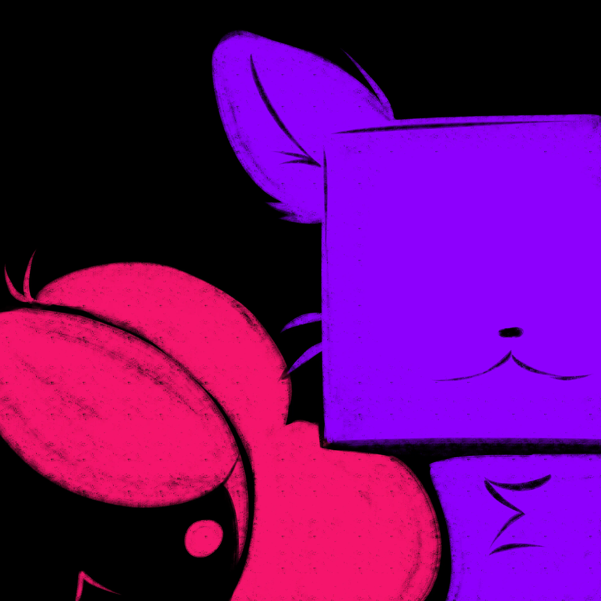
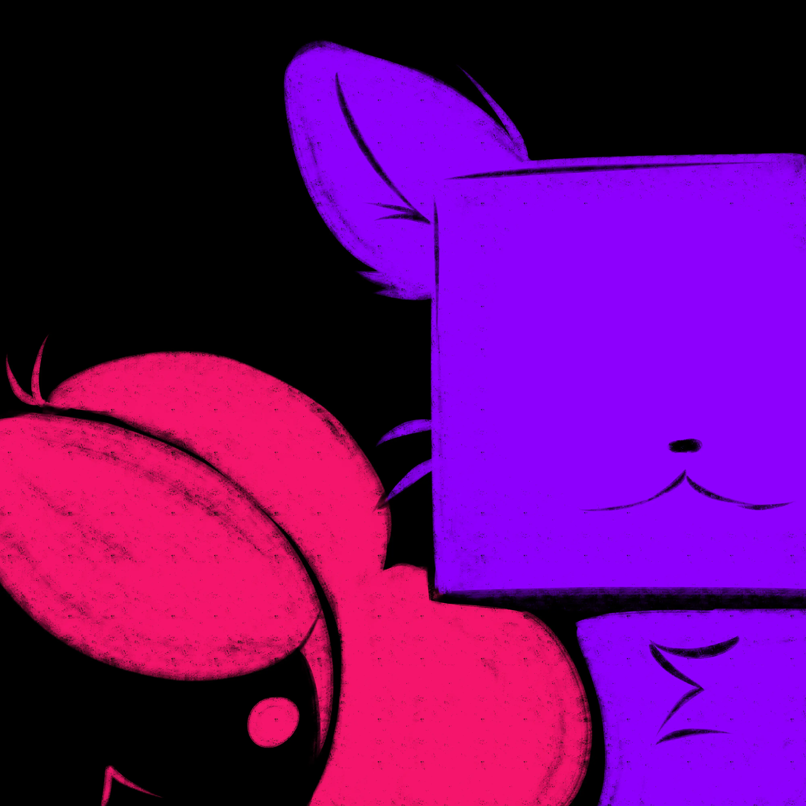
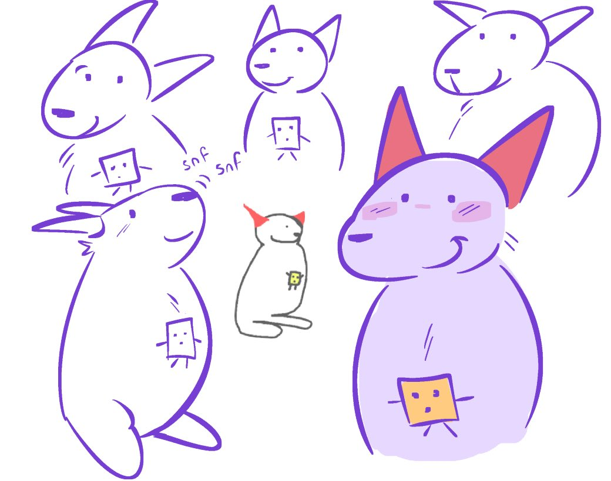
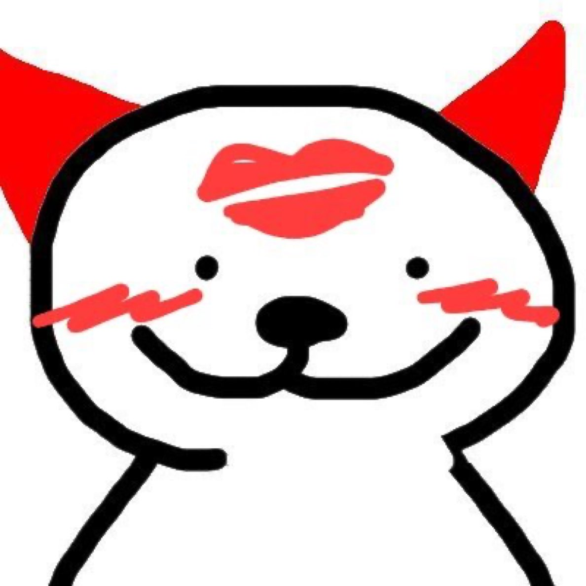
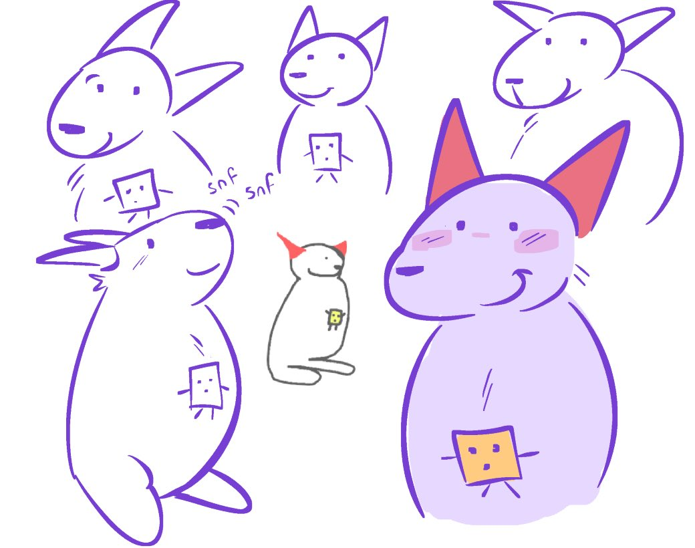
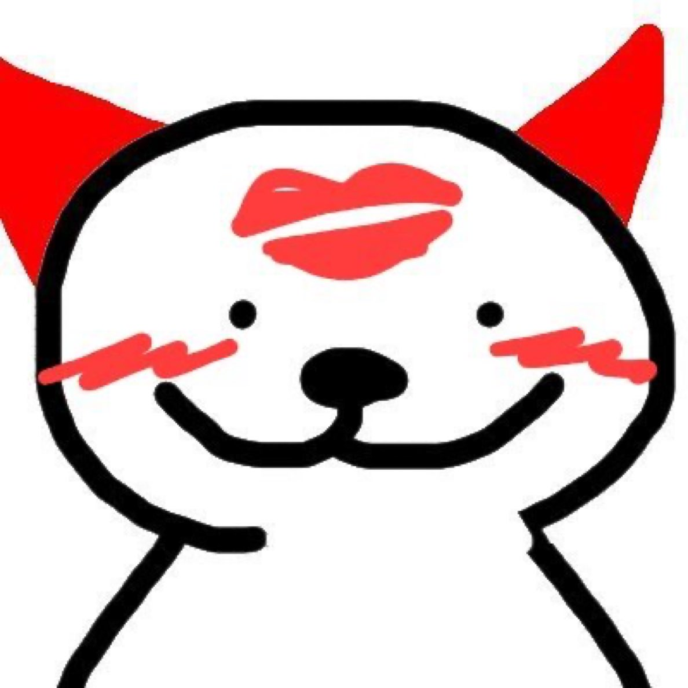

I'm a 20 year old trans girl (She/her)™
(She/her)™
* I make Music
* I make youtube videos
* I like coding
* I like doing projects. Generally.
Here are some links to where I am elsewhere if u wanna pester me (jk.) At the top theres navigation to more info abt me :)


In June of 2024, I released "Look Ahead!" It is an EP based around the idea of an RPG following three kids and their journey up a mountain. The art was done by my boyfie Drew, and the full EP was made in about a month or so. It is video game inspired, specifically by Celeste, with a mix of some chiptune songs and other styles.It is pretty short, but it's worth checking out! (If you want, you can listen below, as well as on Spotify, SoundCloud, Bandcamp, and many other platforms.)
In November 2024, I released a second, shorter EP of five songs. A compilation of tracks I made after making Look Ahead. I wanted a smaller undertaking with a more concrete concept. It is about a lonely space bunny, hence the name. She is called Amie. She is alone, on a space station, and she has been alone for a long time. You can listen to it below (If you want, you can listen below, as well as on Spotify, SoundCloud, Bandcamp, and many other platforms.)
I am making new music every now and again! Check my Twitter or SoundCloud to be updated first!!
My music is on most platforms, including Spotify, SoundCloud, Apple Music, and YouTube.
Here is some of my music :>
Look ahead final album art, done by my boyfie drew (@portalpilled) + a cd concept later made using more art.
Art for the three singles released before Look Ahead released.
In order of "From up here" to "In there!?" to "It still boots!" All done by me.
This EP, is about a lonely space bunny AMIE. She was originally made for an RPGMaker concept on the right. The character design was brought to life by my boyfie drew (@portalpilled) as seen on the cover!
These are the art for some singles released for the EP. Done by me.
These are some extra pieces of art (featuring cat.box another character drew went wild designing LOL)
As well as a gif used in the youtube video for the EP
 

Weird James is an incredible character. He was born on September 23rd 2024 as a homestuck OC and he is also a narbacular drop OC and he is also and OC made for the object show BA:AOS and he is also an official character in Regretavator. Below is like a bunch of fanart from me and friends and fans.
 




 Cat.box
is the first game I ever made. It is a simple high score based game I made mostly in school.
I originally developed in love2d but I later recreated it in godot n put it on itch for fun ;)
Here is the link below if u wanted to try it out!
Cat.box
is the first game I ever made. It is a simple high score based game I made mostly in school.
I originally developed in love2d but I later recreated it in godot n put it on itch for fun ;)
Here is the link below if u wanted to try it out!
Besides this I have also done some work on a BATIM RPGMaker remake
 Bendy:RPG.
It is a recreation of the first chapter which is about 5 minutes of actual gameplay haha. Though it is EVERY detail. I checked I promise.
Bendy:RPG.
It is a recreation of the first chapter which is about 5 minutes of actual gameplay haha. Though it is EVERY detail. I checked I promise.

Something else I do a bunch every now and again is modding. I have released quite a few mods on gamebanana. Some fixing games, some dumb jokes and some quality of life changes. Most notable are my Bendy and The Ink Machine mods. Quality of Life (which is now outdated LOL) , is probably my best bendy mod I made, it is linked below.
In 2023 I released a few mods that fixed several core issues with the games code My quality of life mod ended up becoming an update to the game with the help of one of the lead programmers. Which is like maybe the coolest bragging rights.